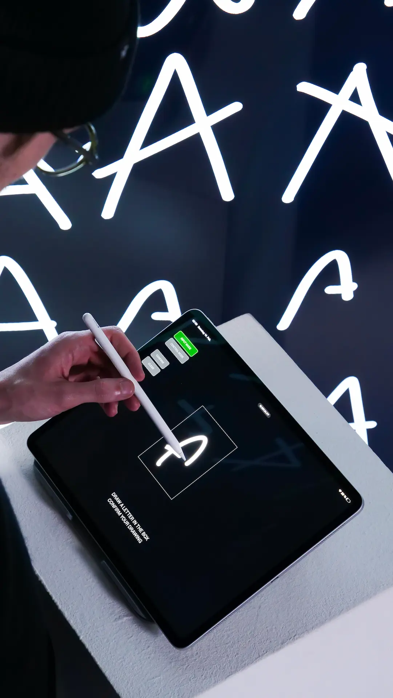
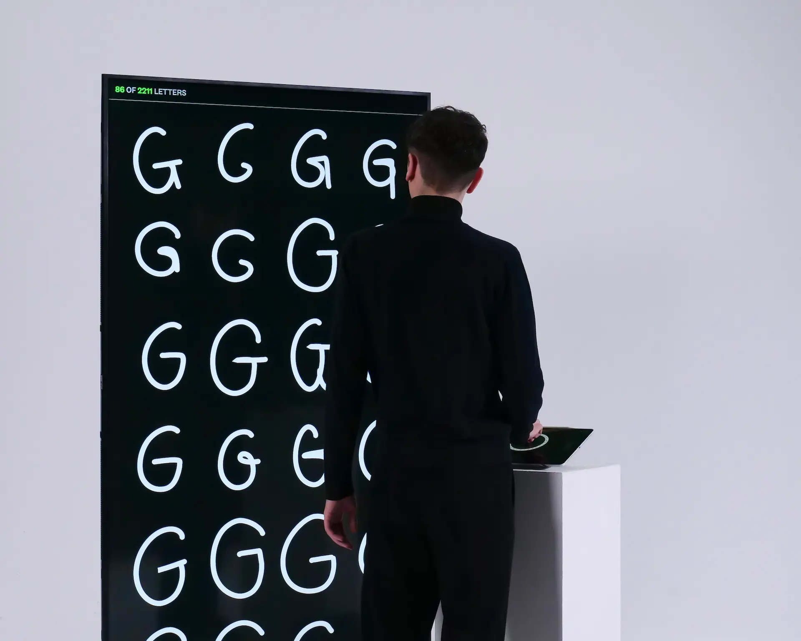
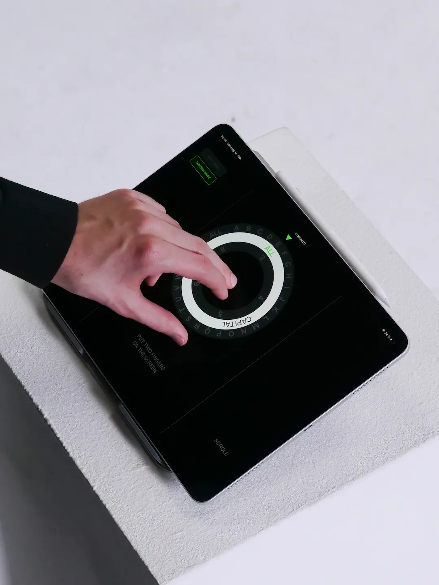
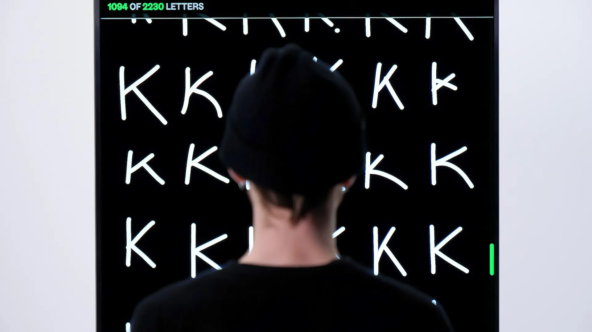

“ Of Letters ” is an interactive installation that explores the tension between hand-drawn expression and machine-driven order. Intuitive gestures are translated into a structured dataset, where the human initiates the process but has no influence over how the drawings are classified.

The input mode allows users to draw a letter, confirm it, and have it classified by an AI system before being added to the dataset.
In the control mode, touch gestures are used to navigate and filter the dataset, allowing users to isolate specific letters and distinguish between uppercase and lowercase.


The matrix visualizes all inputs in a minimalist grid, exposing the subtle differences in handwriting characteristics.
